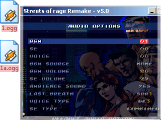

MOD FOLDER
The mod folder allows modifying Streets of Rage Remake by replacing an asset in the game with an external new one.
MODIFY OST

CARPETA MOD
La carpeta mod permite modificar Streets of Rage Remake reemplazando un recurso del juego por otro nuevo externo.
MODIFICAR BSO
37